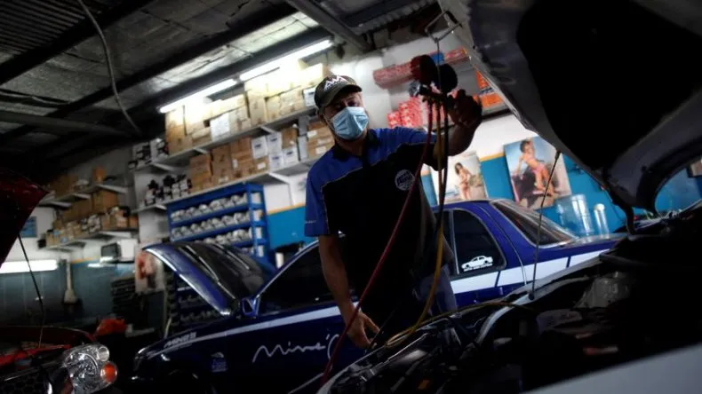
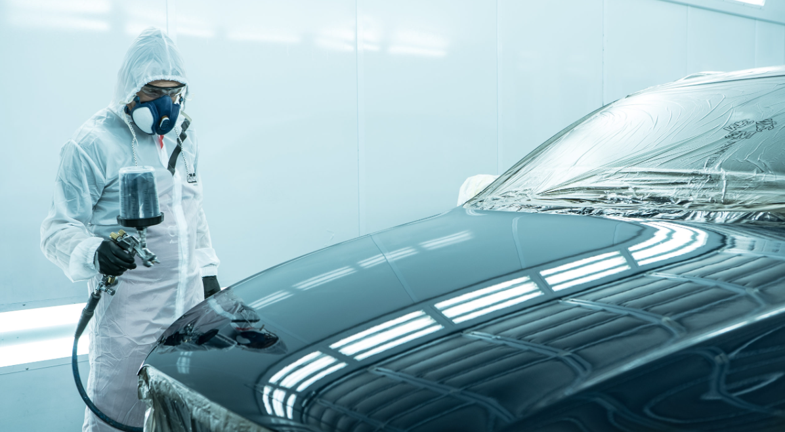

Acceda a nuestro centro de soporte para resolver cualquier duda o inconveniente. Nuestro equipo de asistencia está disponible para ayudarle en todo momento.
Plantean que se haga una reglamentación sobre cantidad de trabajadores de acuerdo al tamaño de los talleres

El empresario y dueño de talleres de reparación de autos, Felipe Rodríguez, manifestó este viernes que, como parte de la reapertura del sector, su empresa ha enfrentado varios retos. Rodríguez detalló que las nuevas medidas implementadas por las autoridades sanitarias, como la limitación de un máximo de diez trabajadores por empresa, han presentado desafíos significativos. Estas restricciones están generando complicaciones operativas y logísticas para mantener la eficiencia en el servicio, y podrían impactar en la sostenibilidad a largo plazo de los talleres.
Pocos talleres de mecánica se reactivan en Chiriquí
Su nombre es Ariel Álvarez, su pasión son los autos. Desde los 8 años comenta que se encuentra envuelto en los vehículos junto con su hermano.
Se graduaron de bachilleres automotrices en la parte mecánica y una parte de automotriz o electromecánica. La razón por la cual forma parte de Jóvenes Brillantes es que quiere aprovechar el momento
y mostrarle a Panamá y al mundo el proyecto en el que forma parte: la transformación de un vehículo de combustión a eléctrico, aprovechando el alto costo del combustible que se presenta hoy en día en nuestro país y aprovechando que recientemente se aprobó una ley sobre movilidad eléctrica.
El secreto del éxito del fabricante de autos eléctricos chino que ya vende más que Tesla
La empresa china BYD vendió más vehículos eléctricos que Tesla en los últimos tres meses de 2023, mientras las dos compañías luchan por el primer puesto en el sector.
BYD dijo este lunes que había vendido un récord de 526.000 vehículos en el último trimestre de 2023, el primero en el que las ventas de la empresa china superaron a las de Tesla.
Sin embargo, durante todo 2023, Tesla vendió más vehículos que BYD. El martes, Tesla dijo que había entregado 484.500 vehículos eléctricos en los últimos tres meses de 2023 y 1,8 millones para todo el año.
Servicios
Diagnostico
En Juan Mecánico contamos con un equipo de tecnología de punta donde tenemos la posibilidad de diagnosticar tu carro:
Diagnóstico de motor
Diagnóstico eléctrico
Diagnóstico de Sistemas de frenos
Diagnóstico de transmisión
Diagnostico de Suspensión y Dirección
Mantenimiento y Reparaciones
En Juan Mecánico ofrecemos una amplia variedad de servicios preventivos, mantenimientos y reparaciones correctivas que su auto requiera:
Mantenimiento de motor
Mantenimiento de transmision
Frenos
Suspension
Diagnostico Computarizado

Chapisteria y Pintura
Los mejores profesionales de al pintura y chapisteria automotriz a su disposicion
.png)